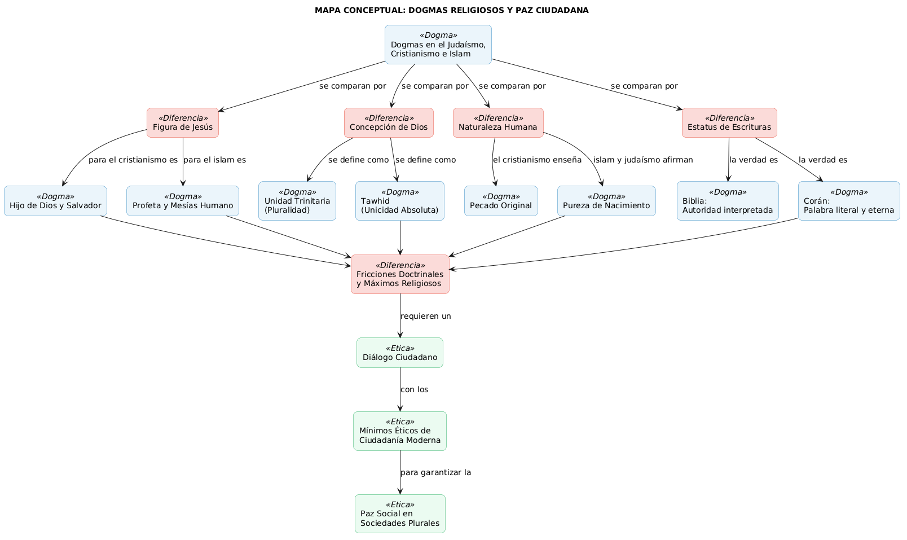

La práctica islámica busca la sumisión total a la voluntad divina y la igualdad entre los fieles.
🔊 Narración: El ritmo de vida musulmán

Estructura de la Práctica Diaria y Vital
4.1.3. El Cristianismo: Vida en la Gracia
El paso de la observancia de la Ley hacia una vida basada en la fe y los sacramentos.
A diferencia del judaísmo y el islam, donde la práctica se centra en la observancia de la Ley o en una sumisión sumamente estructurada, el cristianismo desplaza el centro de la práctica hacia la vida en la «gracia» y la participación en los sacramentos. Bajo esta visión, se enfatiza que la salvación es un regalo divino que se recibe por la fe, superando el simple cumplimiento de códigos legales externos, siendo el bautismo y la eucaristía las marcas fundamentales que unen al individuo con la figura de Cristo.
🔊 Narración: La esencia del cristianismo

Vida en la «Gracia»
La salvación es un "regalo divino" que se recibe por la fe, superando el cumplimiento de códigos legales externos.
Sacramentos
El "bautismo" y la "eucaristía" son las marcas fundamentales que unen al individuo con Cristo.
Unidad en la Pluralidad
La "doctrina de la Trinidad" propone una unidad divina que integra la pluralidad en una sola comunión.
Reto: El Camino de la Gracia
"Analiza la situación y selecciona la respuesta correcta. Si fallas, podrás reintentar tras cerrar el aviso."
Caso 1 de 3
"Un creyente participa en la eucaristía dominical, convencido de que este sacramento lo une directamente con Cristo."
4.2 Ética y Sociedad
Valores compartidos por judaísmo, cristianismo e islamismo.
Las tres religiones abrahámicas comparten principios éticos fundamentales: justicia, honradez y protección de la vida. Estos valores se consideran mandatos divinos y han permitido que las comunidades prosperen bajo solidaridad y respeto mutuo.
"La fe en el Dios uno y único de la Torá hebrea... se vincula intrínsecamente con la responsabilidad ética".
🎧 Escuchar explicación complementaria:
![Ilustración tipo cartel titulada “Ética y Sociedad en Religiones Monoteístas”, con templos judío, cristiano e islámico de fondo, una paloma con rama de olivo sobre una balanza dorada frente a un globo terráqueo y, en primer plano, un líder musulmán, uno judío y una monja cristiana conversando mientras dos manos se estrechan; en la parte baja se ven escenas de ayuda social (voluntario sirviendo comida, médico atendiendo a una madre con su hijo, grupo de personas tomadas de la mano) y símbolos de valores: manos sosteniendo un corazón rojo, un saco de dinero tachado sobre un libro abierto y otro saco con signo de dólar.](img/ética_sociedad.png)
Valores Clave:
4.3 Similitudes y Diferencias
Contraste doctrinal entre el Cristianismo, Judaísmo e Islam.
Jesús es el "puente y muro": Salvador para unos, Profeta para otros. Mientras el cristianismo abraza la Trinidad, el islam defiende el Tawhid (unidad absoluta).
![Ilustración titulada “Similitudes y Diferencias de Religiones Monoteístas” que compara cristianismo, judaísmo e islam mediante escenas simbólicas: figuras representando a cada religión con sus libros sagrados, el pecado original con Adán y Eva, el libre albedrío como un camino que se bifurca entre “bien” y “mal”, un apretón de manos sobre el planeta y gestos de ayuda y cuidado entre personas; al final aparecen los tres libros sagrados juntos, símbolos de un solo Dios y una paloma con la frase “Diálogo y Paz”, resaltando la paz, la justicia y el respeto entre las tres religiones.](img/Similitudes_diferencias.png)
Fig 1. Convergencia y divergencia doctrinal.
| Aspecto | Cristianismo | Judaísmo / Islam |
|---|---|---|
| Dios | Trinidad (Pluralidad) | Unidad Absoluta (Tawhid) |
| Pecado | Original (Requiere Redentor) | Pura (Libre Albedrío total) |
| Jesús | Hijo de Dios / Salvador | Profeta o Mesías Humano |
| Libros | Biblia (Inspirada) | Corán (Literal / Eterno) |
Organizador: Mínimos Éticos del ciudadano
